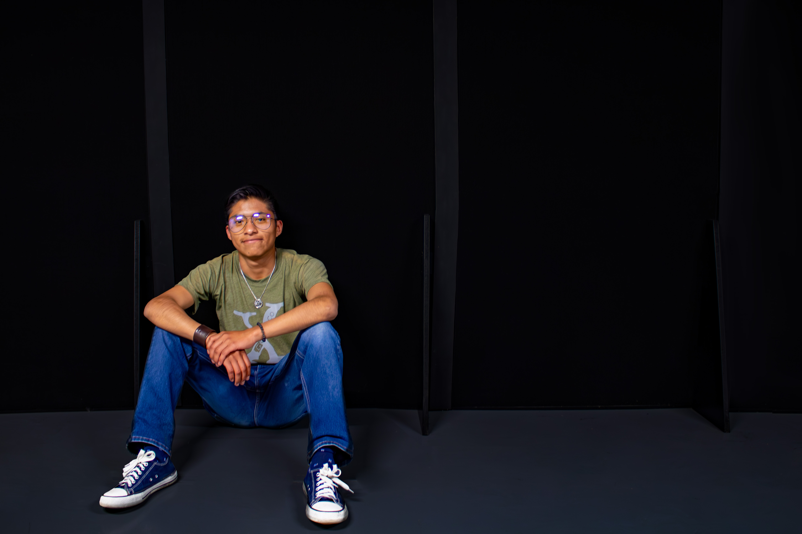
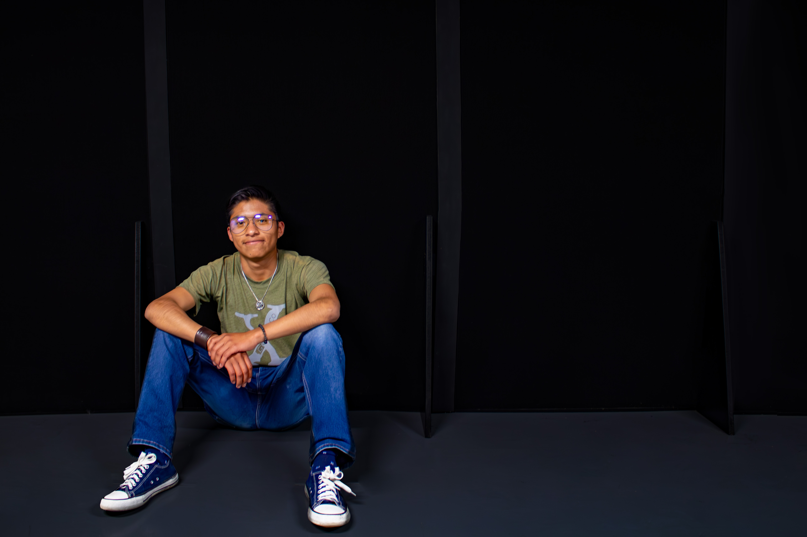

Colectivo Kryzalida
Conformado por:
Omar Vidal Porras Ruíz, José Brando Peña González, Alexis Franco Ramírez (Ele6) y Leonardo Contreras Basilio
Vidal
Artista audiovisual enfocado en la creación de arte generativo y experiencias inmersivas. Ha desarrollado proyectos en tiempo real que integran sonido y visuales, así como obras en video, ilustración digital y entornos interactivos relacionados con videojuegos y plataformas web. Investiga tecnologías emergentes para fusionar arte, ciencia y tecnología, generando propuestas híbridas y contemporáneas.
Brando Peña
Artista audiovisual interesado en la documentación y diseño visual. En el proyecto Ecosistemas, colaboró en la creación de visuales audio reactivos que respondían al sonido en tiempo real. Además, se encargó de registrar todo el proceso mediante fotografía, video y entrevistas, construyendo un archivo visual detallado del proyecto. Su trabajo busca preservar la experiencia estética y conceptual más allá del momento en vivo.
Leo
En Ecosistemas, desarrolló un dispositivo para traducir señales eléctricas de plantas en notas MIDI, integrándolas en una obra sonora. Su enfoque interdisciplinario parte de la investigación técnica y artística, y su participación le permitió expandir sus conocimientos en creación colaborativa, tecnología y arte digital.
Ele6
Colaboró en Ecosistemas en la conceptualización de la obra, diseñando la interconexión de programas como Ableton Live y TouchDesigner mediante un teclado MIDI. Su propuesta emulaba el funcionamiento de una raíz subterránea. Además, compartió conocimientos sobre tecnología análoga y captura de audio en tiempo real, contribuyendo desde una perspectiva técnica y poética a la narrativa de la pieza.


Abril Estefani Torres Ovando
Artista contemporánea cuya práctica se enfoca en la memoria colectiva desde una perspectiva social y emocional, con especial interés en la identidad del ser y su impacto en el mundo. Actualmente estudia la Licenciatura en Arte y Comunicación Digitales en la Universidad Autónoma Metropolitana, Unidad Lerma. Su trabajo abarca instalación interactiva, arte sonoro, fotografía documental y artística, escritura poética, narrativa experimental y videoarte. Ha participado en diversos proyectos musicales como vocalista en Rondalla Lunar (2014-2015), el grupo andino Kutichikuy (2017-2020) y como cantautora en Proletariado Band (2017-2024). Ha colaborado en iniciativas como DES/FASES (2022), NGU_Cultura (2022) y con el colectivo Axolotl en Poemas del agua (2024). Actualmente se dedica a la fotografía poética y digital.


Colectivo Perdido
Conformado por:
Ana Saray García Cardoso, Atzyn Yamileth Muñoz Santes (Malhecha) y Andrés Ariel Rubio Lavín (León de Dios)
Saray Cardoso
También conocida como "Frijolitos", es una artivista mexicana que trabaja con fotografía, medios digitales y textiles. Estudia la Licenciatura en Arte y Comunicación Digitales en la Universidad Autónoma Metropolitana, Unidad Lerma. Su obra resignifica experiencias de dolor y problemáticas sociales desde una mirada íntima y colectiva. Utiliza el arte como herramienta de acompañamiento y sanación, abordando temas de género, interactividad y apropiación de espacios. Participa activamente en talleres y proyectos feministas de intervención social.
Malhecha
Artista visual que trabaja bajo el seudónimo Malhecha. Su práctica abarca medios digitales y análogos, explorando el dibujo, el videoarte, la animación, el arte interactivo y la instalación. Estudia en la Universidad Autónoma Metropolitana, Unidad Lerma, y centra su obra en el cuerpo como superficie extraña, la identidad como ruptura y el sentir como acto político, moviéndose entre lo íntimo y lo colectivo.Artista visual que trabaja bajo el seudónimo Malhecha. Su práctica abarca medios digitales y análogos, explorando el dibujo, el videoarte, la animación, el arte interactivo y la instalación. Estudia en la Universidad Autónoma Metropolitana, Unidad Lerma, y centra su obra en el cuerpo como superficie extraña, la identidad como ruptura y el sentir como acto político, moviéndose entre lo íntimo y lo colectivo.
León de Dios
Artista digital en formación en la Universidad Autónoma Metropolitana, Unidad Lerma. Su práctica combina programación, fotografía, edición de audio y video, con un enfoque crítico sobre lo social y lo político. Explora el arte como una grieta que revela otras formas de habitar el mundo, priorizando lo incómodo, lo contradictorio y lo fallido como motores de reflexión.
Ha trabajado de forma individual y colaborativa. Entre sus proyectos destacan [EC]H2O, presentada en el Segundo Festival Estudio Simbiosis, y el videojuego El Sendero de los Muertos, exhibido en Festivarte.


Ana Sofía Vázquez Morales
Artista interdisciplinaria cuya práctica se sitúa en la intersección entre la memoria, el cuerpo, el territorio y los vínculos afectivos. Trabaja con medios como la fotografía, instalación, bordado, video y animación. Ha colaborado con colectivos culturales y participado en publicaciones como Punto de partida (2024) y NGU (2025). Estudia la Licenciatura en Arte y Comunicación Digitales en la UAM-Lerma, donde forma parte del proyecto Atoyatl. Su obra más reciente, Todo lo que tocas, es una animación que aborda el tecnofeudalismo y el capitalismo de vigilancia desde una narrativa poética.
Nallely de la Torre Ortiz (Mei)
Ilustradora digital multidisciplinaria, estudiante de la Licenciatura en Arte y Comunicación Digitales en la Universidad Autónoma Metropolitana, Unidad Lerma. Su obra abarca la creación de personajes en 2D, animación en 3D y arte generativo. Ha participado en festivales como Tarde de Imágenes y Sonidos con Código, Circuits in Trance en el marco del 9º Festival Cultural Todos Somos Calavera, y en el concierto multicanal Deconstrucciones. Su práctica se centra en la combinación de proyecciones y arte electrónico para crear espacios inmersivos que relaten memorias.


Colectivo Bak.NET
Conformado por:
Estrella Joana Martínez Hernández, Barbara Karime Guerra Bastida, Joselyn Guadaluoe Cuevas Gutiérrez, Andrea Carolina Alcántra García (AriCady) y Kevin Rubén Colín Martínez.
Joana Hernández
Artista digital interesada en las relaciones entre arte, tecnología y percepción sensorial. Su práctica combina instalación interactiva, videoarte y narrativas especulativas para explorar el cuerpo, el espacio y las transformaciones socioculturales. Estudia en la UAM-Lerma, donde ha desarrollado proyectos con herramientas como TouchDesigner, cómputo físico, fotografía y video. Su trabajo busca generar experiencias inmersivas que reflexionen sobre nuestra relación con los entornos naturales y digitales.
Bárbara Karime Guerra Bastida
Artista digital mexicana cuyo trabajo explora las intersecciones entre arte, tecnología y crítica social. Estudia la Licenciatura en Arte y Comunicación Digitales en la UAM-Lerma, con énfasis en NetArt, videoinstalación y fotografía. Su obra aborda temas como el cuerpo, la identidad y el imaginario social, utilizando herramientas como TouchDesigner. Su objetivo es crear piezas visualmente impactantes que inviten a la reflexión crítica y a cuestionar lo normativo.
Joselyn Cuevas
Artista digital y análoga interesada en la fotografía, el video, la pintura y la acuarela. Actualmente estudia herramientas como TouchDesigner y Blender para expandir su práctica hacia lo digital. Su obra explora temas vinculados con la psicología, la nostalgia y el duelo, así como las emociones humanas y su expresión a través de lo visual. Busca crear piezas que establezcan vínculos íntimos con el espectador a través del arte.
AriCady
Artista digital y análoga con experiencia en dibujo, edición y producción de video. Su obra ha transitado por disciplinas como el cortometraje, el videoarte y el arte interactivo. Explora temas relacionados con la soledad, la psicología, las relaciones humanas y la experiencia femenina. Actualmente orienta su práctica hacia la moda y la exploración íntima de la identidad de género, buscando nuevas formas de expresión personal y visual.
Kevin Rubén Colín Martínez
Ilustrador, fotógrafo y programador visual. Su trabajo aborda temas como la salud mental, la pérdida, el ocultismo y el terror desde una perspectiva que promueve el misterio y la reflexión. Especialista en TouchDesigner, su obra busca generar experiencias sensoriales cercanas a la sinestesia, donde imagen y sonido se entrelazan para provocar una conexión emocional profunda con el espectador.
 

Jaime Sara Bastida (Sr. Jaime)
Conocido como “Sr. Jaime”, es un artista multidisciplinario que trabaja con artes digitales y escénicas, integrando medios como el audiovisual, collage, fotografía y teatro. Estudiante de Arte y Comunicación Digitales en la Universidad Autónoma Metropolitana, Unidad Lerma, su obra se nutre de la psicología y la antropología para explorar temas como la memoria, los orígenes y las transformaciones. Su interés actual se orienta hacia el arte comunitario, interactivo y el videomapping. Desarrolla Arena, una pieza audiovisual interactiva que reflexiona sobre la relación entre humanos y naturaleza, y sus efectos generacionales.